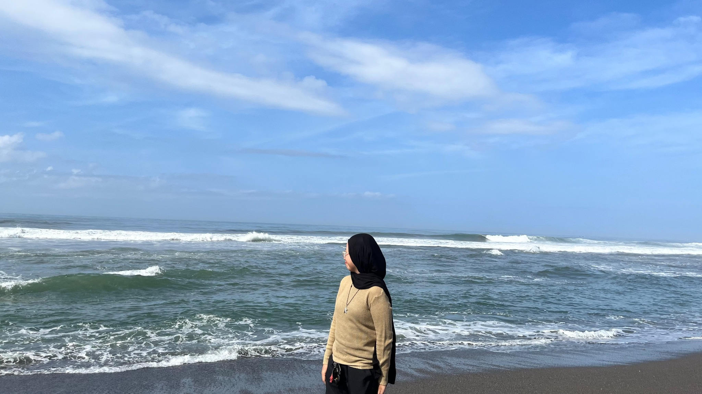
01 / OUTDOOR
Nature & Traveling
Jalan-jalan ke alam, menikmati pantai, air terjun, pegunungan, dan pemandangan baru.
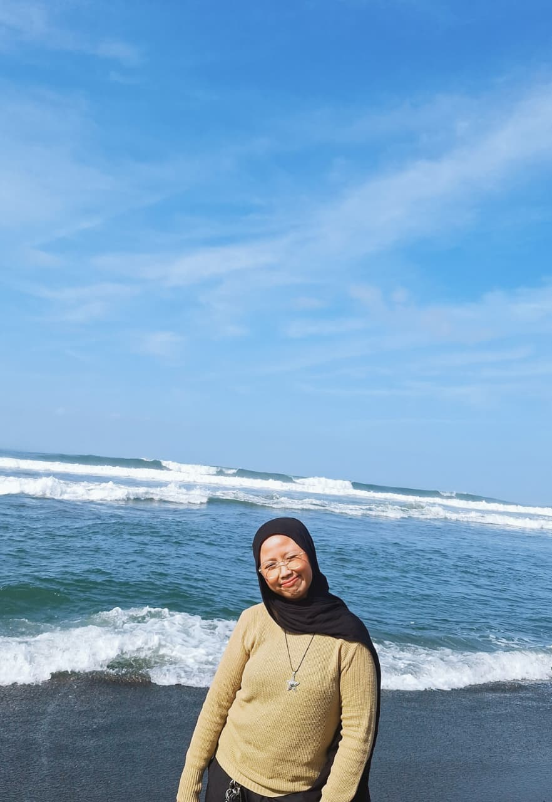
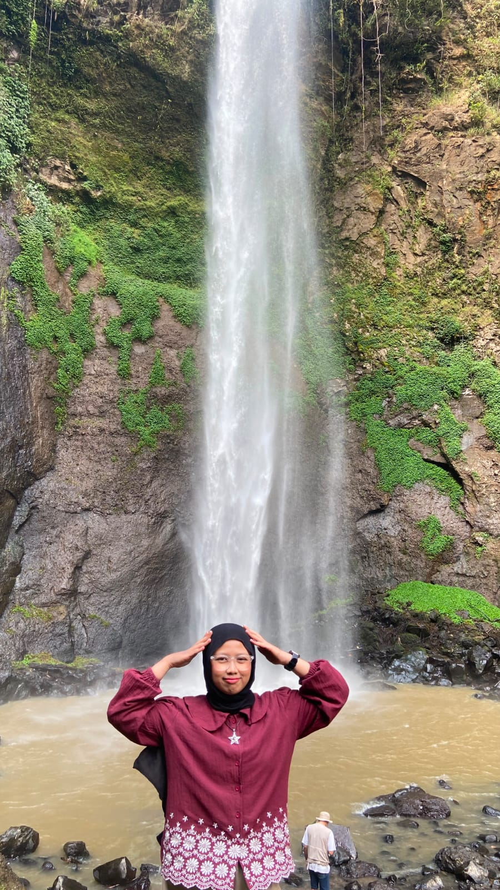
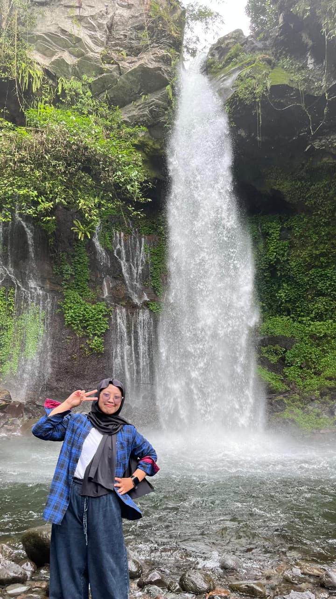
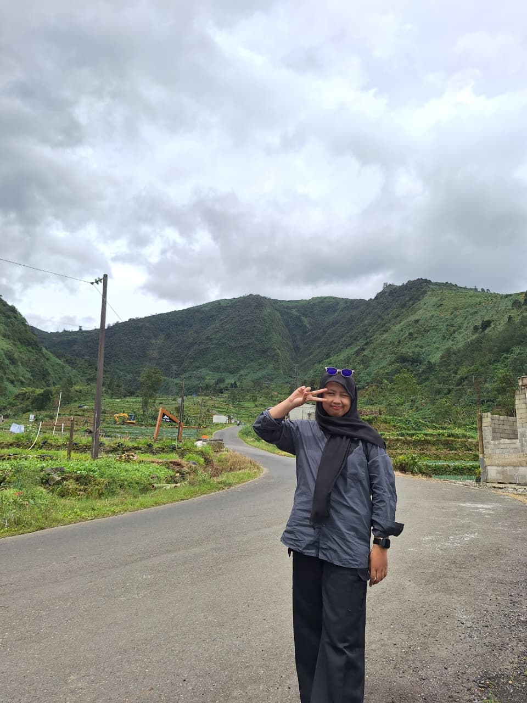

PERSONAL WEBSITE / AUTOMOTIVE EDITION
Hi, I'm Syahla. Welcome to my little corner — a mix of personal stories, favorite things, music, and automotive dreams.
MEET THE DRIVER ↓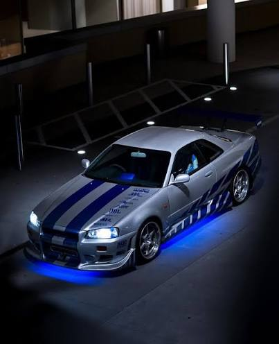
01 / DRIVER PROFILE
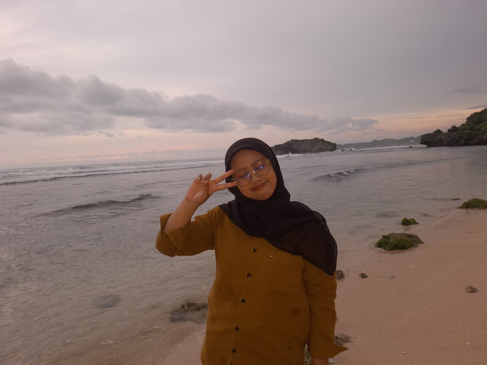
I'm Syahla Sabrina Nugraheni , a student of Manajemen Informasi. I enjoy collecting little moments, exploring new places, listening to music, and spending time on things that make me happy.
02 / OFF THE TRACK
A few things that make my days more colorful.

Jalan-jalan ke alam, menikmati pantai, air terjun, pegunungan, dan pemandangan baru.




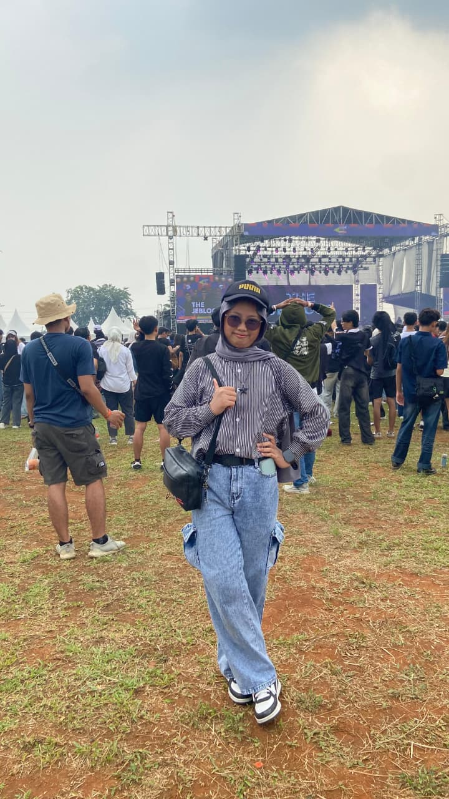
Menikmati suasana acara dan musik secara langsung. Momen paling seru adalah saat bisa ikut bernyanyi dan menikmati suasananya.
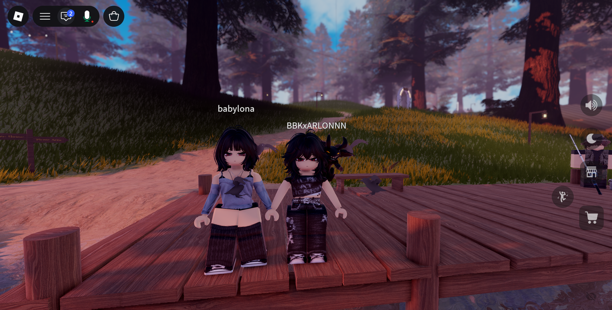
Main game untuk hiburan, melepas penat, dan mengisi waktu luang.
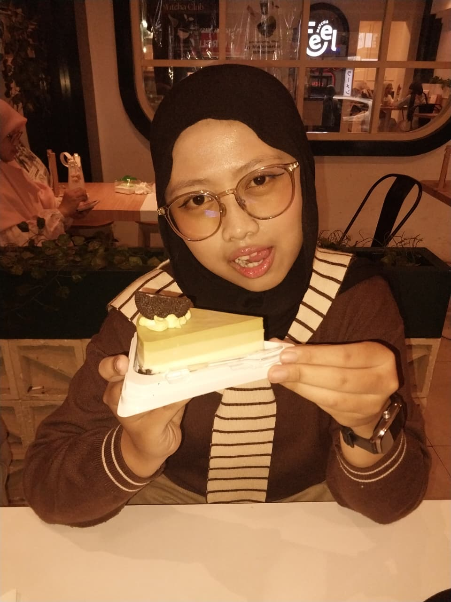
Mencoba jajanan dan menemukan makanan atau dessert yang menarik.
03 / ON REPEAT
Musik dari musisi yang sering masuk playlist-ku.
A little bit of everything, depending on the mood.
04 / DREAM GARAGE
Two cars with a special place in my automotive wishlist.
Ikon JDM yang identik dengan Brian O'Conner dari film 2 Fast 2 Furious. Desainnya timeless dan punya karakter yang kuat.
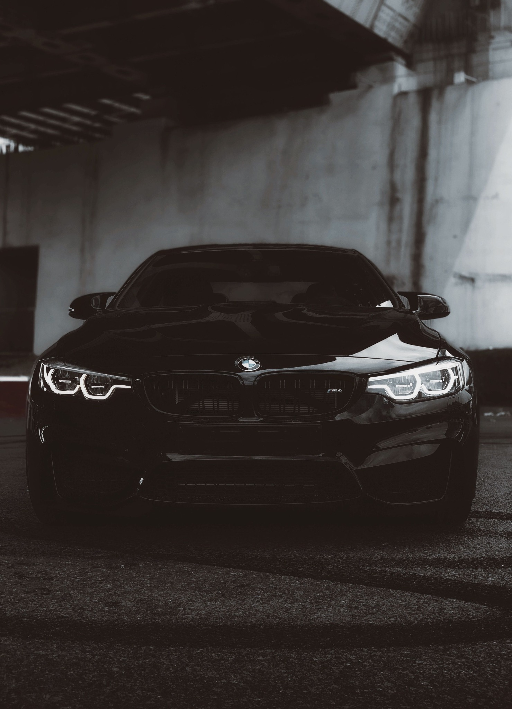
Sport coupe impian dengan desain tegas, tampilan elegan, dan karakter performa tinggi.
STEER YOUR OWN STORY — BLUE SPEED.
05 / KEEP IN TOUCH
Thanks for visiting Syahla's Garage. Feel free to say hello!